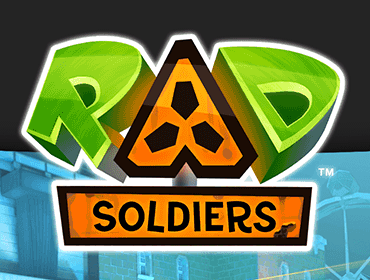
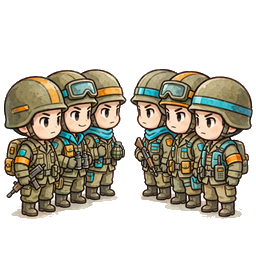
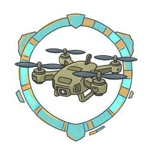

CSN · CHESS SOLDIER NATIONTáctica por turnos en cuadrícula · 13 tableros 12×12 + 6 de campaña
Antes de tu primera partida tienes que alistarte en una de las 12 naciones del juego. Cada una se identifica por los colores de su bandera y por el emblema de sus fuerzas armadas, que será el distintivo de tu skin de Nación. Y en el evento Guerra de Naciones lucharás por ella cada fin de semana.
Esto no es una imagen: es la vista 3D del juego renderizándose en tu dispositivo, con el escenario en volumen y los soldados sobre la cuadrícula. Gira solo para que lo veas desde todos los lados. En cuanto entres en partida, este mismo 3D es el tablero donde juegas.
Cargando la vista 3D…
Entra directo a una partida de baliza 4v4 contra la IA con la escuadra de siempre; los botones de humo y aturdidora abren variantes con Espía y Comando.

Ajedrez por turnos con fusiles de verdad: dos escuadras, energía, cobertura direccional y armas reales. Elige nación, monta tu escuadra y a jugar.

Modo clásicoGana quien elimine a toda la escuadra enemiga. Sin baliza y sin atajos: el modo directo del original.
 Modo del original
Modo del original
Aguanta 5 turnos con tu escuadra dentro de la zona central y sin enemigos dentro, o elimina al rival. La zona del cohete de RAD Soldiers, reconstruida.
Captura de baliza por tu nación contra una nación rival controlada por la IA. Cada victoria suma un punto al marcador de tu nación en este dispositivo.
 Nuevo · Control de zonas
Nuevo · Control de zonas
Tres zonas a la vez: Depósito (flanco oeste), Centro (la baliza) y Muelle (flanco este). Al iniciar tu turno desde la ronda 2, sumas 1 punto por cada zona que mantengas controlada (y 1 extra si dominas las tres). Gana quien llegue a 10 puntos o elimine al rival. Ya no basta con aguantar un punto: hay que repartir la escuadra y decidir dónde pelear.
Cinco misiones seguidas sobre los tableros del juego, cada una con un objetivo distinto: eliminación, baliza, dominación, defensa del puente y asalto final 5 contra 5 contra la IA en Élite. Tu escuadra arrastra la veterania: cada soldado que sobrevive a una misión empieza la siguiente con +25 PV y +1 ⚡ por misión superada, y los caídos vuelven, pero sin veterania. El progreso se guarda en este dispositivo.

Nuevo · Escolta asimétricaUn dron averiado (240 PV, entra ya dañado con 180) espera en tu flanco oeste y la extracción está en el este, tras las líneas rivales. Pega a tus soldados a él (mientras tenga al menos un soldado aliado pegado recibe −50 % de daño) y guíalo casilla a casilla (máximo 2 guiados por ronda, 2 ⚡ del guía cada uno) mientras el rival intenta destruirlo: si el dron llega a la extracción, gana la escolta; si el dron cae, o si la defensa aguanta 15 rondas, gana la defensa. Eliminar a la escuadra rival también vale, y tu Médico puede reparar el dron sobre la marcha. La IA rival juega el objetivo: intercepta al dron, le dispara primero a él y lo granadea en cuanto lo tiene a tiro.
Tienes tres skins, y las tres son solo aspecto, sin pasivas: Estándar (genérica), Clase (color del rol) y Nación (bandera, casco y emblema). La de Nación es una skin más, no la definitiva: más adelante llegarán otras skins, y esas sí darán pasivas pequeñas. Eliges la skin de tu escuadra al configurar cada partida.
El soldado genérico, como la skin estándar de Fortnite: uniforme verde oliva liso, sin colores de nación, sin emblema y sin nada especial.
Los colores de la bandera de tu nación en el uniforme y el casco, con el emblema de sus fuerzas armadas en el pecho.
Los trece tableros jugables son de 12×12 casillas con simetría de 180°, para que ningún bando nazca con ventaja: estanterías y muros que no se rompen, cajas destructibles que dan cobertura, barriles explosivos (70 de daño en las casillas adyacentes si les disparas), dos botiquines de un solo uso (+50 de vida al pasar por encima) y una torreta capturable en el centro: el primer soldado que se plante en su casilla y gaste 2 de energía la pone a disparar para su bando al final de cada turno. En las rondas 3 y 6 cae una caja de botín cerca del centro con cura, energía o una granada extra para quien la recoja. La vista del tablero sigue la cámara del original como referencia de encuadre: inclinación de 50°, distancia de 8,5 casillas y campo de visión de 37,5°.
29 armas jugables con datos verificados de manuales militares y fichas del fabricante, más el equipo de granadas, torretas y botiquines de la sección siguiente. Aquí ves las armas de la v1 con sus datos reales y su traducción al juego: daño, alcance en casillas y coste de energía sobre cuerpos de 200, 250 o 300 PV según el tipo (ligero, medio o pesado).
400 g, 180 g de Composition B, radio letal real de 5 m. En el juego: 75 de daño en la casilla y 35 en las adyacentes, lanzamiento a 3 casillas, coste 2. El Comando lleva una extra.
540 g, humo de 50–90 segundos en el mundo real. En el juego ya está dentro, como equipo del Espía: 2 granadas por partida, 2 ⚡, lanzamiento a 4 casillas, y la cortina tapa la casilla destino y las 4 adyacentes en cruz durante 2 rondas completas, bloqueando la visión a través de ella (disparos, fuego de respuesta, vigilancia y torretas) y la de quien está dentro de ella a más de 1 casilla, pero no el movimiento ni las granadas, que vuelan en arco por encima. Verificado camino a camino dentro de la partida (ver el registro de esta ronda). La regla completa va en el punto 19 de «Cómo se juega».
170–180 dB y 6–8 millones de candelas. En el juego ya está dentro, como equipo del Comando: 2 por partida, 2 ⚡, lanzamiento a 4 casillas en arco, sin daño, y aturde a todo soldado en radio 1 de la casilla destino durante 1 turno (de los dos bandos; solo se salva quien la lanza): el aturdido no devuelve el fuego, pierde su vigilancia y en su turno empieza con −6 ⚡ y −25 de puntería. La regla completa va en el punto 23 de «Cómo se juega».
.50 BMG, 38 kg, en servicio desde 1933. En el juego es la torreta que despliega el Ingeniero (45 de daño) y la del emplazamiento central capturable (40 de daño), las dos con alcance 6 y fuego automático al final del turno de su bando.
La Claymore proyecta unas 700 bolas de acero en abanico de 60°; el C4 detona a 8.092 m/s y solo con detonador. En el juego la Claymore ya está dentro, como equipo del Ingeniero: 2 por partida, 3 ⚡, colocada en una casilla adyacente y oculta para el enemigo, con 60 de daño a quien la pise. La regla completa va en el punto 21 de «Cómo se juega». El C4 sigue como diseño del arsenal completo.
Kit individual de trauma del CoTCCC: torniquete C-A-T, gasa hemostática, sellos torácicos. En el juego: el Médico cura 80 y el botiquín del mapa devuelve 50.
Las reglas del original, verificadas, y las novedades de este remake.
Juega un bando entero y luego el otro, como en el ajedrez. Cada soldado tiene su propia reserva de energía por turno.
La vida y la energía van por tipo de cuerpo, no por rol: ligero 200 PV y 12 ⚡ moviendo a 1 ⚡ por casilla, medio 250 PV y 14 ⚡ a 2 ⚡ por casilla, y pesado 300 PV y 18 ⚡ a 3 ⚡ por casilla. Disparar cuesta lo que diga el arma. El pesado aguanta y dispara mucho, pero cada paso le cuesta triple que al ligero.
Al pasar el cursor sobre un enemigo verás la probabilidad de impacto. El azar es el del original, con semilla por turno para que la partida sea reproducible: hay críticos (×1,5), dispersión de daño (±15 %) y caída de daño por distancia. La cobertura es direccional y de cuatro niveles: sin cobertura, ligera (caja dañada, −12), media (caja, −25) y pesada (muro o estantería, −40), y solo protege desde la dirección de la que viene el tiro. Atacar por la espalda, contra la dirección de mira del objetivo, da +12 de puntería.
El Espía y el Francotirador son ligeros: se mueven lejos y barato, pero aguantan 200 PV. El Artillero es el único pesado: 300 PV y 18 ⚡ para sostener ametralladoras y lanzacohetes, a cambio de pagar 3 ⚡ por casilla. Médico, Ingeniero, Comando y Capitán son medios, el equilibrio del original. Y cada rol tiene su propio cuerpo, no solo su tipo: el Artillero es enorme y ancho, el Francotirador flaco y alto, el Espía pequeño y oscuro, el Ingeniero bajito y rechoncho y el Capitán el más alto de la escuadra, cada uno con su tocado, su color y su arma, para reconocerlos de un vistazo como en el original.
Invisibilidad del Espía, curación y reanimación del Médico, torreta del Ingeniero, orden de mando del Capitán (+3 de energía a un aliado), tiro certero del Francotirador y supresión del Artillero. El equipo lanzable y colocable de cada rol va aparte: el humo M18 del Espía en el punto 19, la Claymore del Ingeniero en el 21 y la aturdidora M84 del Comando en el 23.
Todas las armas lo llevan activado: si un soldado sobrevive a un disparo y tiene al atacante en alcance y línea de visión, responde una vez por turno con su arma, sin coste de energía, con −20 de puntería y daño ×0,6. Disparar ya no es gratis.
Por 3 ⚡ un soldado se queda en vigilancia: disparará gratis (con −10 de puntería) al primer enemigo que se mueva dentro de su alcance y su línea de visión durante el turno rival. Se gasta al disparar o al empezar su siguiente turno.
Cada soldado mira hacia donde se mueve o dispara, y esa dirección decide su cobertura y si le flanquean. En las rondas 3 y 6 cae una caja de botín cerca del centro: cura 75 PV, da +6 ⚡ o una granada extra a quien se plante encima.
Dispara a un barril para explotarlo, rompe las cajas que protegen al rival, coge el botiquín y captura la torreta central con 2 de energía estando sobre su casilla.
En Captura de baliza y Guerra de Naciones, aguanta 5 rondas con al menos un soldado tuyo en la zona ámbar y ningún enemigo dentro. El contador está sobre el tablero.
Solo sábado y domingo. Tu escuadra, con la skin de tu nación, contra una nación rival de la IA. Cada victoria suma 1 punto al marcador local de tu nación.
Empiezas con dos: la Estándar, el soldado genérico sin nada especial, y la de tu Nación, con los colores de su bandera y el emblema de sus fuerzas armadas. Las dos son solo aspecto. Las skins que lleguen más adelante darán pasivas pequeñas; estas dos, ninguna.
Nada se teletransporta: cada soldado se desliza hasta su casilla y respira en reposo mientras espera órdenes, los disparos se ven como trazadoras con su impacto y su número de daño flotante, y las explosiones sacuden la cámara. La baliza pulsa, las cajas de botín flotan sobre su casilla y la torreta central gira patrullando hasta que alguien la captura. Si tu sistema pide reducir el movimiento, la animación se apaga y el tablero vuelve a ser estático sin perder ninguna regla.
Tres zonas: Depósito (casilla 4,5 contando desde la esquina superior izquierda), Centro (las cuatro casillas de la baliza) y Muelle (casilla 9,8), elegidas libres de muros, cajas y barriles en los trece tableros y simétricas a 180° entre sí. Una zona es tuya si tienes al menos un soldado dentro y ningún enemigo dentro. Al iniciar tu turno desde la ronda 2 sumas 1 punto por zona controlada, y 1 punto extra si controlas las tres. Gana quien llegue a 10 puntos; si nadie llega, al final de la ronda 15 gana quien tenga más puntos, y eliminar al rival también gana al instante. Las zonas se ven en el tablero con su letra y su color de control, y el marcador va sobre el tablero.
Cinco misiones en orden, cada una con mapa, objetivo, formato y dificultad propios. La escuadra arrastra veterania entre misiones: sobrevivir a una misión da +25 PV y +1 de energía máxima en las siguientes, acumulable. Perder una misión no borra la veterania ni el progreso: solo repites esa misión. Completar las cinco cierra la operación.
Recluta: la IA hace un 15 % menos de daño. Normal: la IA de siempre. Veterano: +1 de energía por soldado rival, cura con el Médico, despliega la torreta del Ingeniero y prioriza baliza y zonas de Dominación. Élite: todo lo de Veterano y además +2 de energía, +25 PV, +15 % de daño y revive con el Médico. Normal, Veterano y Élite concentran el fuego sobre tu soldado más herido (Recluta dispara al más cercano). A dos jugadores la dificultad no se aplica.
El arreglo de los sprites llega a la vista 3D en directo: cada fotograma, el arma de utilería se recoloca sobre las manos reales del esqueleto (empuñadura en la mano derecha y guardamanos en la de apoyo; con pistola, sobre el eje del antebrazo), así que ya no flota delante del pecho ni en reposo ni al andar, disparar o encajar un tiro.
Modo asimétrico: la escuadra del Jugador 1 escolta y la rival defiende. El dron averiado (240 PV, entra entero) sale de la casilla (2,6) contando desde la esquina superior izquierda, y la extracción es la zona 2×2 de las columnas 11–12 y filas 6–7, en el este. Guiarlo cuesta pegarse a él: un soldado adyacente pulsa «Guiar dron» (2 ⚡) y toca la casilla destino junto al dron, y entre toda la escuadra hay 2 guiados por ronda, así que el dron avanza como mucho 2 casillas por ronda y siempre con escolta al lado. Además, blindaje de escolta: mientras el dron tenga al menos un soldado aliado adyacente, todo daño que reciba se reduce a ~la mitad (−53 % medido). El Médico lo repara con su especial (+80 PV, del mismo cupo de 2 curaciones) estando adyacente. El dron no dispara, no devuelve fuego y no provoca vigilancia, pero los disparos, las granadas, la salpicadura y los barriles sí le dañan, y su cobertura direccional cuenta como la de un soldado. Gana la escolta si el dron pisa la extracción o si elimina al rival; gana la defensa si destruye el dron, elimina a la escolta o aguanta las 15 rondas. Contra la IA, la defensa juega el objetivo: intercepta, dispara primero al dron y lo granadea.
El Espía lleva 2 granadas de humo M18 por partida (botón «Humo M18», 2 ⚡, lanzamiento a 4 casillas). La cortina tapa la casilla destino y las 4 adyacentes en cruz, y bloquea la visión a través de ella durante 2 rondas completas: nadie dispara, devuelve fuego, vigila ni acierta con torreta a través del humo, y tampoco se acierta a quien está dentro del humo ni se dispara desde dentro a más de 1 casilla; el indicador de puntería lo marca como «Sin tiro · humo M18» y el aviso al intentarlo nombra el humo. Lo mismo vale para disparar contra una torreta desplegada, un barril o una caja que queden tras la cortina. Las granadas M67 no se ven afectadas: se lanzan en arco, por encima de la cortina. El humo no bloquea el movimiento (se entra y se cruza libremente) y a 1 casilla el tiro se resuelve igual, porque entre dos casillas pegadas no hay humo de por medio. Tapa a los dos bandos por igual, se disipa sola al empezar el turno de quien la lanzó en la segunda ronda siguiente, y la IA del Espía la usa para taparse cuando tiene al enemigo a tiro y con visión. En Escolta, una cortina entre la defensa y el dron le compra al dron dos rondas de avance sin recibir fuego. Para verlo en juego sin configurar nada: el botón «Probar el humo M18» de la pantalla de inicio despliega un 5 contra 5 con un Espía por escuadra y el tuyo ya seleccionado.
Cada soldado mira hacia su dirección de mira (hacia donde se movió o disparó por última vez), y esa dirección es la que decide su cobertura y si le atacan por la espalda. Al cambiar de mira, el soldado gira sobre el terreno por el camino más corto, en unos 300 ms por cuarto de vuelta, con su pasito de ajuste: ya no rota de golpe ni mira hacia otro sitio distinto del que calculan las reglas. En la vista clásica el giro se lee en el volteo del sprite y en que se estrecha un instante mientras rota. Las torretas y el dron giran igual. Es un giro construido en código: entre los clips del original convertidos no hay ninguno de giro. Si tu sistema pide reducir el movimiento, el giro es instantáneo.
El Ingeniero lleva 2 minas Claymore por partida (botón «Claymore M18A1», 3 ⚡) y las coloca en una casilla adyacente libre. La mina queda oculta para el enemigo en las dos vistas: solo la ve quien la colocó, a ras de suelo y con un LED rojo, y ni el registro de partida revela dónde la puso la IA. No bloquea el movimiento, ni la visión, ni da cobertura. Cuando un soldado enemigo acaba su movimiento sobre su casilla, la mina estalla: 60 de daño explosivo a ese soldado y la mina se consume. Bajo los pies de su propio bando no estalla nunca, y el dron de Escolta no las dispara, porque no presiona el suelo. La IA del Ingeniero las siembra en la baliza, en las zonas de Dominación y de cara al enemigo.
El juego suena con audio sintetizado: disparos, explosiones (granadas, barriles y Claymores), el fogonazo de la M84, el armado de la mina, el cambio de turno y el final de la partida se generan con WebAudio en el momento, sin archivos. El sonido arranca con tu primer toque en la página (los navegadores no dejan sonar antes) y se apaga o se enciende con el botón «Sonido» de la barra de turno; tu preferencia se guarda en este dispositivo.
El Comando lleva 2 granadas aturdidoras M84 por partida (botón «Aturdidora M84», 2 ⚡, lanzamiento a 4 casillas). Se lanzan en arco, como la M67, así que ni los muros ni el humo las paran, y no hacen daño: lo que hacen es dejar aturdido durante 1 turno a todo soldado en radio 1 de la casilla donde estallan (esa casilla y las 8 que la rodean), de los dos bandos, porque la luz y el estruendo no distinguen uniformes; el único que se salva es quien la lanza, que aparta la mirada. El dron de Escolta no se aturde, porque es una máquina, y el Espía invisible sí se aturde (es un fogonazo en área, no un disparo dirigido), aunque conserva su invisibilidad. Estar aturdido significa cuatro cosas: no devuelves el fuego si te disparan, pierdes la vigilancia que tuvieras puesta y no puedes ponerte en vigilancia, al empezar tu próximo turno pagas −6 ⚡ de salida (se suma a la supresión si la llevas), y durante ese turno cada tiro tuyo pierde −25 de puntería. Al cerrar ese turno, el aturdimiento se pasa. No se apila: una segunda M84 sobre un soldado ya aturdido renueva su turno aturdido, no lo duplica. En el tablero el aturdido lleva el 💫 y el rótulo «ATURDIDO» en la vista clásica, y una estrella y un anillo amarillos en la 3D. La IA del Comando la usa antes de disparar: busca la casilla a su alcance que más enemigos ciegue descontando a los aliados propios dentro del radio, y la lanza sobre los grupos, porque un enemigo aturdido tampoco le devuelve el fuego. Para verlo en juego sin configurar nada: el botón «Probar la aturdidora M84» de la pantalla de inicio despliega el 4 contra 4 de siempre con tu Comando ya seleccionado.
Cada rol tiene su propio cuerpo, como en el original: no es el mismo soldado con otra mochila. El Artillero es un armario, el Francotirador un flaco alto, el Espía un retaco oscuro, el Ingeniero un bajito rechoncho y el Capitán el más alto de la escuadra; el tocado, el color y el arma acaban de decir quién es quién. Y cada uno tiene ya su retrato propio, el mismo que verás en su ficha durante la partida: la capucha ghillie del Francotirador, el casco de comunicaciones del Artillero, la capucha oscura del Espía, el casco blanco con cruz del Médico, el casco amarillo del Ingeniero, la gorra táctica del Comando y la gorra de plato con galón dorado del Capitán.
Cargando los retratos de los roles…
Cargando el tablero, los soldados y los mapas…